Pagos cheques |
Este formulario contiene el movimiento pendiente con concepto de Manejo cheques. Aplica en el caso en que la entidad determine que los pagos en cheque deban cumplir el correspondiente plazo de canje por oficina, ilustrando dichas transacciones.
Así mismo, esta opción del sistema permite la consulta y/o la interacción con las transacciones que han sido remitidas por los procesos de validación y las causales permiten encaminar el análisis requerido en la solución del movimiento pendiente.
El formulario contiene las opciones Actualizar, Detalle y un filtro de búsqueda.
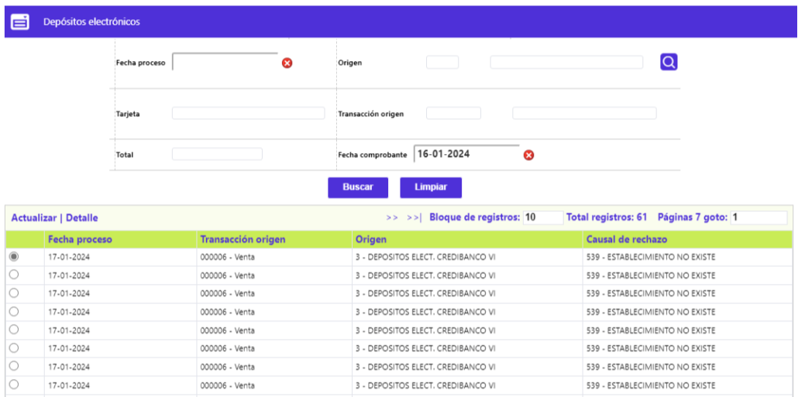
Filtro: Se pueden realizar consultas a través de las siguientes opciones:
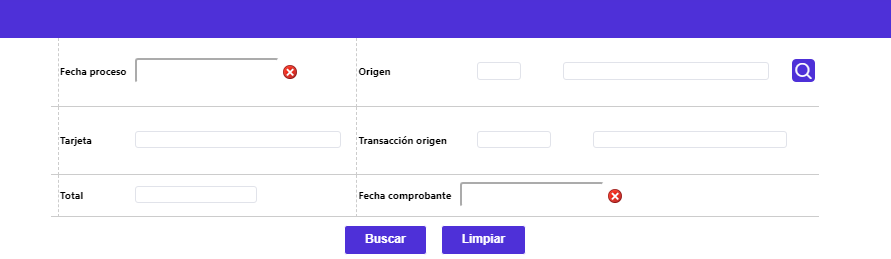
Fecha proceso |
Este campo permite ingresar cualquier dato válido con el formato YYYY-MM-DD. |
Origen |
Lista de valores que permite ingresar cualquier valor numérico de máximo 3 dígitos. |
Tarjeta |
Este campo permite ingresar cualquier valor alfanumérico de 23 caracteres. |
Transacción origen |
Lista de valores que permite ingresar cualquier valor alfanumérico de máximo 6 caracteres. El filtro de Transacción origen solo tendrá información para consulta cuando el usuario haya diligenciado el Origen, de lo contrario, el sistema no permitirá ningún dato al no tener como armar la lista de valores. |
Valor total |
Para este campo el sistema admite cualquier dato numérico de máximo 14 dígitos, 12 enteros y dos decimales. |
Fecha comprobante |
Este campo permite ingresar cualquier dato válido con el formato YYYY-MM-DD. |
Actualizar: Si el usuario invoca la opción Actualizar se despliega un formulario con todos campos que se describen a continuación. Adicionalmente, cuenta con una serie de botones de opciones especiales y un globo ubicado en la parte superior derecha para ingresar a los Datos de localización.
Todos los datos que aparecen al ingresar al formulario son desplegados por defecto, brindan información básica tanto de la fuente u origen de la causal que motivó su no aplicación, como también información monetaria y de identificación.
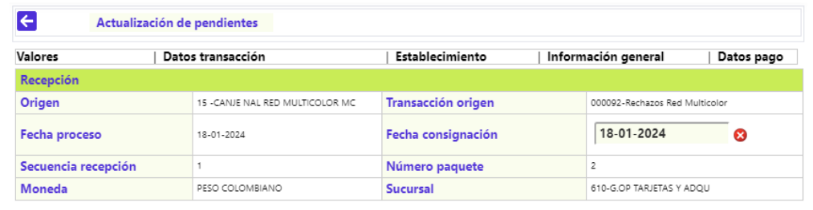
Origen |
Campos que despliegan tanto el código como el nombre del origen o fuente de transacciones dentro del que se incluía la transacción enviada a movimiento pendiente. |
Transacción origen |
Despliega tanto el código como el nombre asociado a cada tipo o clase de transacción enviada a pendiente contenida dentro del archivo del movimiento con base en la codificación determinada por las franquicias y parametrizada mediante la opción Orígenes de transacciones del Núcleo. |
Fecha proceso |
Campo con formato YYYY-MM-DD ilustra la fecha en que se efectuó el proceso del archivo en que viajó la transacción enviada a Movimiento pendiente. |
Fecha consignación |
Contiene la fecha en formato YYYY-MM-DD en la que el establecimiento realizó la consignación de los comprobantes o ingresó el depósito electrónico con la transacción de consumo o utilización. |
Secuencia recepción |
Campo de salida que ilustra el número con el que se identifica el cargue de archivos o integración del movimiento ingresado por un mismo origen para una misma fecha de proceso. |
Número paquete |
Campo que ilustra el número del paquete que identifica el movimiento por clase o tipo de transacción, lo que facilita su ubicación en caso de ser necesario. |
Moneda |
Despliega el nombre oficial de la Moneda que identifica la moneda original de la transacción. |
Sucursal |
Campo de salida que despliega el nombre de la oficina por medio de la que ingresó el movimiento. |
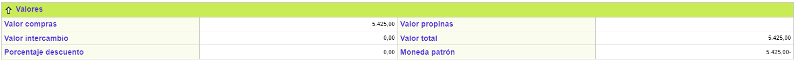
Valor compras |
Muestra el monto de la transacción de utilización o consumo sin incluir el valor de la propina concedida por el tarjetahabiente. |
Valor propinas |
Refleja el monto de la propina otorgada por el cliente. |
Valor intercambio |
Muestra el valor neto de la transacción, esto es, valor del consumo o utilización más valor propina menos valor descuento. |
Valor total |
Despliega el valor bruto de la transacción, esto es, valor del consumo o utilización más valor propina. |
Porcentaje descuento |
Contiene el valor deducido al establecimiento al liquidarle la comisión o descuento sobre el valor del consumo realizado por el cliente. |
Moneda patrón |
Despliega el nombre oficial de la Moneda que identifica la moneda original de la transacción. |
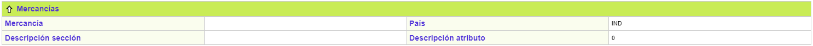
Mercancías |
Cuando la transacción corresponda a compra de una mercancía asociada a una promoción especial, en este campo se despliega la información correspondiente al artículo adquirido. |
País |
Despliega el nombre del país o estado en el que se ubica la sede u oficina principal del establecimiento de comercio donde se realiza la transacción. |
Descripción sección |
Este campo muestra el nombre de Sección del establecimiento a donde pertenece la mercancía. |
Descripción atributo |
Campo que muestra el atributo de la mercancía desplegada en el campo anterior. |
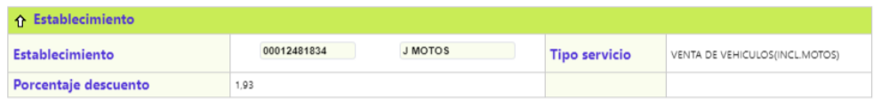
Transacción interna |
Contiene el nombre con el que se identifica internamente la transacción, es el mismo que aparecerá en el extracto una vez sea corregida y aplicada, con base en lo parametrizado en la opción Transacciones por entidad del Núcleo. |
Marca |
Dato que indica el nombre de la franquicia a la que pertenece el plástico con el que se realizó la transacción. |
Número tarjeta actual |
Reseña el número de la tarjeta asociado inicialmente a la transacción, el cual puede ser erróneo o no pertenecer al sistema. |
Número tarjeta anterior |
Muestra el número correcto de la tarjeta a la que efectivamente le es aplicada la transacción; este campo despliega o contiene información si previamente se ha modificado el número de tarjeta a afectar como parte de la solución de movimiento pendiente. |
Plazo |
Contiene el número de periodos de 30 días, solicitado por el cliente o asignado por defecto, para el pago de la transacción de consumo o utilización. |
Fecha contabilización |
Contiene la fecha en formato YYYY-MM-DD, en que se afectó contablemente los saldos del tarjetahabiente, usualmente es la misma fecha de proceso o canje. |
Boleta de ruta |
Corresponde al número consecutivo de los comprobantes de control permitidos por cada oficina en la captura del movimiento, producto de la operación diaria. |
Fecha comprobante |
Muestra la fecha física del comprobante de consumo o utilización en formato YYYY-MM-DD. |
Indicador de cashback |
Cuando el establecimiento en el cual se realizó la transacción posee esta característica indica que el valor registrado como Propina corresponde a un Avance hecho por el cliente en dicho establecimiento. Los posibles valores del campo son "0" en caso de no tener cashback ó "1" cuando el establecimiento si tiene esta condición. |
Número consignación |
Corresponde al número del comprobante de consignación al cual pertenece el pagaré de la utilización. |
Número acción |
Campo que se activa si ha sido definido previamente para el producto, y permite registrar el número de acción de un club o similares. |
Promoción |
Campo que muestra el código y el nombre de la promoción de colocación relacionada con la transacción. |
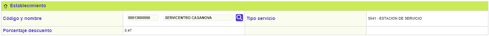
Código y nombre |
Despliega el código único que identifica el establecimiento en que se realizó la utilización o consumo. |
Tipo servicio |
Despliega el nombre del principal servicio ofrecido por el establecimiento de comercio. |
Porcentaje descuento |
Contiene el valor deducido al establecimiento al liquidarle la comisión o descuento sobre el valor del consumo realizado por el cliente. |
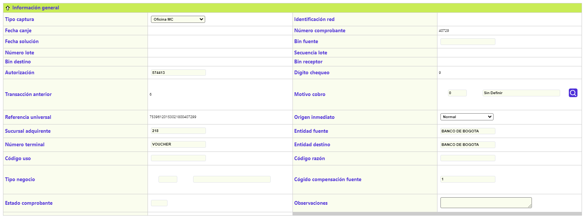
Tipo captura |
Señala el nombre asociado al código definido por la franquicia que identifica la manera como ingresó, por medio de su red, la transacción al sistema. |
Identificaión red |
Número que permite establecer la red a través de la cual se efectuó la transacción. |
Fecha canje |
Campo con formato YYYY-MM-DD ilustra la fecha en que se efectuó el proceso del archivo. En que viajó la transacción enviada a Movimiento pendiente. |
Número comprobante |
Corresponde al número de recibo o comprobante de venta de la utilización. |
Fecha solución |
Señala la fecha en formato YYYY-MM-DD en que fue resuelta la inconsistencia que motivó el no proceso de la transacción. |
Bin fuente |
Contiene el mismo prefijo o bin receptor. |
Número lote |
Contiene el número asignado a cada lote de movimiento previo a su captura y que permite identificarlo posteriormente. |
Secuencia lote |
Campo de salida que ilustra el número con el que se identifica el cargue de archivos o integración del movimiento ingresado por un mismo origen para una misma fecha de proceso. |
Bin destino |
Señala el prefijo o bin centro de proceso de la entidad emisora del plástico. |
Bin receptor |
Contiene el prefijo o bin centro de proceso de la entidad a través de la que ingresa la transacción. |
Autorización |
Muestra el número de la autorización asignado a la transacción por el procesador o la entidad. |
Dígito de chequeo |
Campo numérico cuyo valor debe coincidir con el último número de la referencia universal el que también es utilizado para validación del movimiento. |
Transacción anterior |
Aplica para transacciones que se encuentran en proceso de intercambio por lo que en cada etapa recibe un nombre diferente al precedente. |
Motivo cobro |
Dato modificable, contiene tanto el código como el nombre asociado a las transacciones de notas débito o crédito generadas como resultado del proceso de intercambio o de efectos o comprobantes al cobro, y que ilustran la motivación de esos cargos o abonos interentidades. |
Referencia universal |
Número construido y validado por el sistema tanto para el canje enviado como para el recibido, identifica de manera exclusiva a cada transacción dentro de todo el universo transaccional. |
Origen inmediato |
Aplica para las transacciones que al ingresar al sistema no pasaron directamente al movimiento diario, sino que han transitado por otras etapas o destinos del movimiento, permitiendo identificar la procedencia de las mismas. |
Sucursal adquirente |
Despliega el código que permite identificar la sucursal de la entidad adquirente o receptora del movimiento |
Entidad origen |
Despliega el nombre de la entidad asociado al bin fuente. |
Número terminal |
Identifica el número de terminal en la que se ingresó el depósito electrónico con la transacción de consumo o utilización por parte del establecimiento. |
Entidad destino |
Señala el nombre de la entidad asociado al bin destino. |
Código uso |
Valor o identificador utilizado en los registros del movimiento de canje internacional. |
Código razón |
Valor o identificador utilizado en los registros del movimiento de canje internacional. |
Tipo negocio |
Despliega el nombre del principal servicio ofrecido por el establecimiento de comercio. |
Código rechazo |
Despliega el código asignado por el procesador para identificar la causa o motivo por la que un registro del archivo de canje enviado le es devuelto a la entidad. |
Código compensación fuente |
Es el código del banco receptor de la transacción. |
Estado comprobante |
Informa si el comprobante ha sido solucionado con anterioridad y cuál fue dicha solución. |
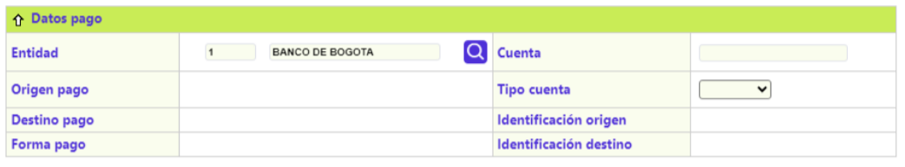
Entidad |
Contiene tanto el código como el nombre de la entidad financiera receptora del movimiento. |
Cuenta |
Despliega el número de la cuenta de depósitos perteneciente al establecimiento de comercio. |
Origen pago |
Aplica para los pagos de tarjetas extendidas tales como las empresariales ingresados al sistema mediante la captura de oficinas, despliega por defecto Tarjeta. |
Tipo cuenta |
Identifica si el número de cuenta del establecimiento corresponde a Corriente, Rotativo o Ahorros. |
Destino pago |
Aplica para los pagos dirigidos ingresados al sistema mediante la captura de oficinas y presenta opciones tales como Línea, Tarjeta o Transacción. |
Identificación origen |
Despliega el número de la tarjeta principal o la empresarial bajo la que se encuentra una o más tarjetas extendidas a las que se les aplicará el pago. |
Forma pago |
Indica si el pago se realizó en efectivo o en cheque. |
Identificación destino |
Contiene el número asociado a la línea de crédito, a la tarjeta o a la transacción hacia la que se dirige el pago. |
Observaciones |
Campo habilitado para agregar información adicional relacionada con la transacción pendiente. Permite ingresar cualquier valor alfanumérico de máximo 250 caracteres. |
Datos de localización: A través del globo ubicado en la parte superior derecha, se llega a esta opción que contiene los siguientes campos.
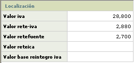
Valor iva |
Refleja el valor cobrado al cliente por concepto de impuesto al valor agregado. |
Valor rete-iva |
Campo que despliega el monto retenido por la entidad adquirente por dicho concepto acorde con los parámetros correspondientes (%base retención y %rete-iva) definidos en Información de establecimientos, o en Tipos de servicio o en Parámetros operativos. |
Valor retefuente |
Contiene algún valor si el establecimiento en que se realizó la transacción es sujeto a aplicarle la retención en la fuente. |
Valor reteica |
Contiene algún valor si el establecimiento en que se realizó la transacción es sujeto a aplicarle la retención sobre el impuesto de industria y comercio ICA. |
Valor base reintegro iva |
Este campo despliega el valor que sirve como base para el cálculo del reintegro de los 2 puntos de IVA sobre compras y que corresponde al valor de los bienes y/o servicios gravados con una tarifa del 16%; a partir del 2005 también quedaron incluidos aquellos que estén gravados con un IVA del 10%. |
Detalle: Si el usuario invoca la opción Detalle, se despliega un formulario que contiene los mismos datos que el Actualizar.
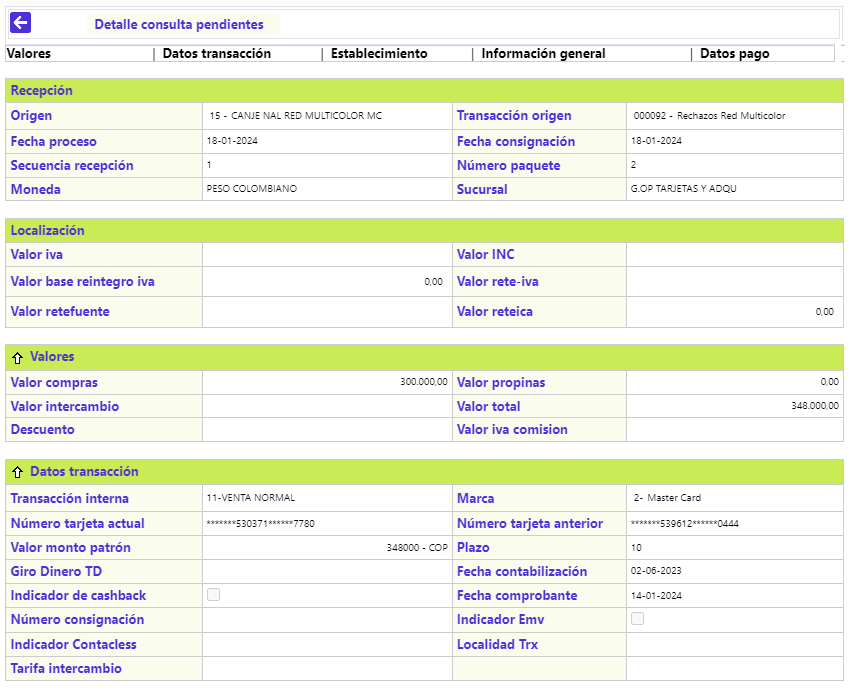
Aplicar movimiento: Una vez modificada y/o adicionada la información requerida es posible enviar la transacción para ser validada y posteriormente aplicada al cliente. |
|
Enviar a castigo: Último recurso del que dispone la entidad para solucionar una transacción que ha agotado todas las alternativas. Se puede presentar porque no fue posible cargar al cliente por no haberla efectuado, no haberla reconocido o pagado la compañía de seguros; no haber logrado el pago ni mediante el proceso de contracargo ni comprobantes al cobro o de buena fe. En síntesis la entidad debe asumir esa pérdida. |
|
|
Reconsignar cheque: Aplica en caso que de acuerdo con los parámetros de Causales de rechazo para Pago en cheque, como en el campo Libera cheques a facturación de la opción Parámetros operativos, no se haya definido enviar a movimiento pendiente o se interrumpa el tiempo en días hábiles del canje, y así permitan reiniciar o reasignar el plazo de canje definido para cada sucursal receptora en Estructura orgánica, labor que debe realizarse durante el plazo de canje del cheque puesto que el sistema una vez cumplido el plazo, si no ha recibido alguna novedad, libera el pago y lo aplica. |
|
Devolver el pago en cheque: Se utiliza cuando éste resulta impagado, esto implica realizar la labor de devolver el pago, durante el plazo de canje del cheque, puesto que el sistema una vez cumplido el plazo, si no ha recibido alguna novedad, libera el pago y lo aplica. Se despliega un formulario adicional en la que debe señalarse la causal dada por la entidad financiera para devolver el cheque. Tiene los campos Motivo (código y descripción), Porcentaje sanción y Fecha retiro. |
|
Retirar movimiento: Esta opción tiene un efecto contable, pues retira el movimiento de las cuentas contables que afectó. |